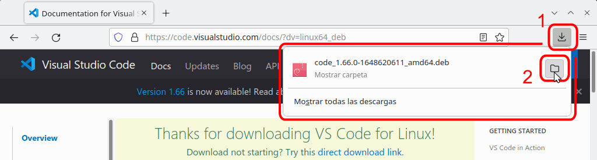
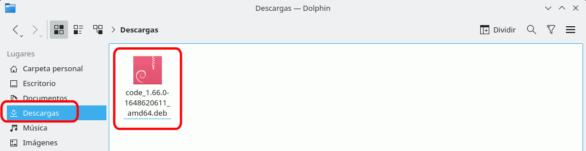
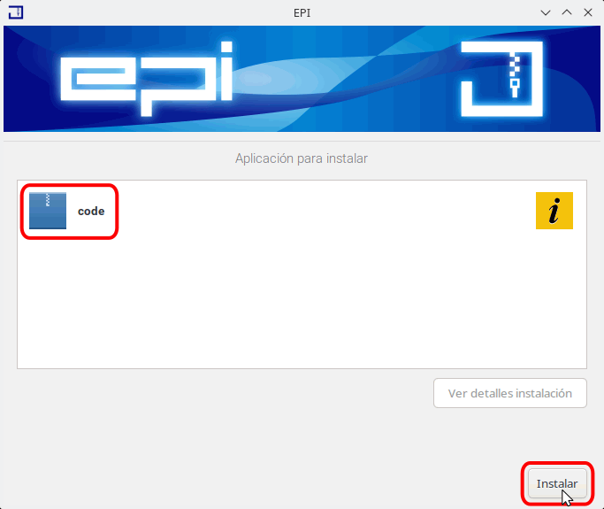
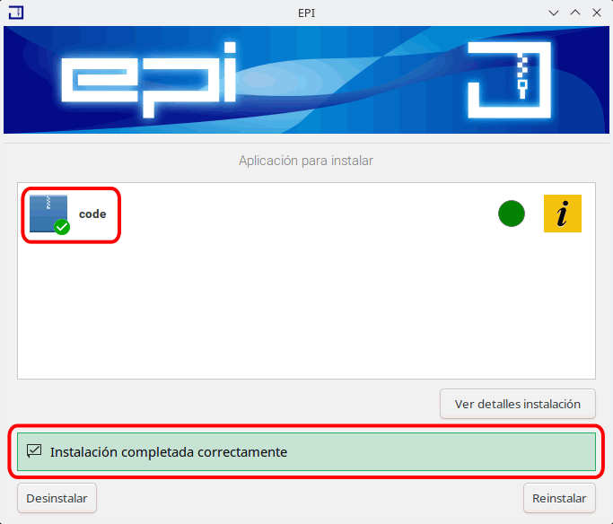

Visual Studio Code aparece tanto en la aplicación LliureX Store como en la aplicación Discover, pero su instalación desde ambas aplicaciones me ha dado problemas que no he sabido resolver. Por ese motivo, en esta lección se explica la instalación de Visual Studio Code a partir del paquete .deb proporcionado por Microsoft.
Conseguir Visual Studio Code en LLiureX
La página oficial de Visual Studio Code es https://code.visualstudio.com/. Desde la página principal se puede descargar la última versión estable (mediante el botón azul grande situado a la izquierda) o acceder a la página de descargas (mediante el botón azul más pequeño situado arriba a la derecha):
Desde la página de descargas se pueden descargar las versiones para diferentes sistemas operativos (32 / 64 bits, Windows / GNU/Linux / Mac). En Windows hay además disponibles versiones System installer, que se instalan en la carpeta de Archivos de programa, y versiones User installer, que se instalan en la carpeta de usuario. Desde el verano de 2018, Microsoft recomienda la versión User installer.
Desde Firefox abra una ventana de Dolphin en el directorio de Descargas. Puede hacerlo haciendo clic en el icono del Proceso de descargas y a continuación en el icono de carpeta situado a la derecha del fichero descargado:

En Dolphin, haga doble clic en el fichero .deb descargado:

Se abrirá el instalador de paquetes EPI (tras pedirle en caso necesario la contraseña de sudo). Haga clic en Instalar para iniciar la instalación:

Al finalizar la instalación, se mostrará el resultado. Cierre la ventana del instalador de paquetes EPI.

Nota: Si al poner en marcha Visual Studio Code, el apartado Extensiones de la barra de actividades da un error de red y no puede conectarse con el marketplace, abra una ventana de terminal (Menú de aplicaciones > Sistema > Konsole) e instale el paquete gnome-keyring:
sudo apt install gnome-keyring
Primera ejecución
La primera vez que se abre Visual Studio Code tras la instalación, se muestra una página de bienvenida al programa:
Nota: Al detectar la presencia o ausencia de algunas aplicaciones (por ejemplo Git o Docker), Visual Studio Code se pueden mostrar distintos avisos.
Actualizar Visual Studio Code en LliureX
La instalación con el paquete .deb ha configurado el repositorio gestionado por Microsoft por los que la actualización de Visual Studio Code se puede realizar con los comandos habituales: